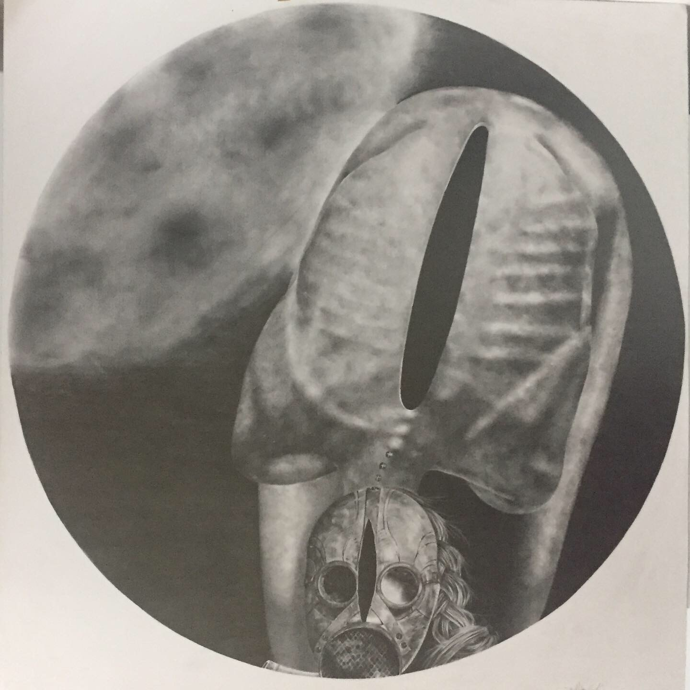
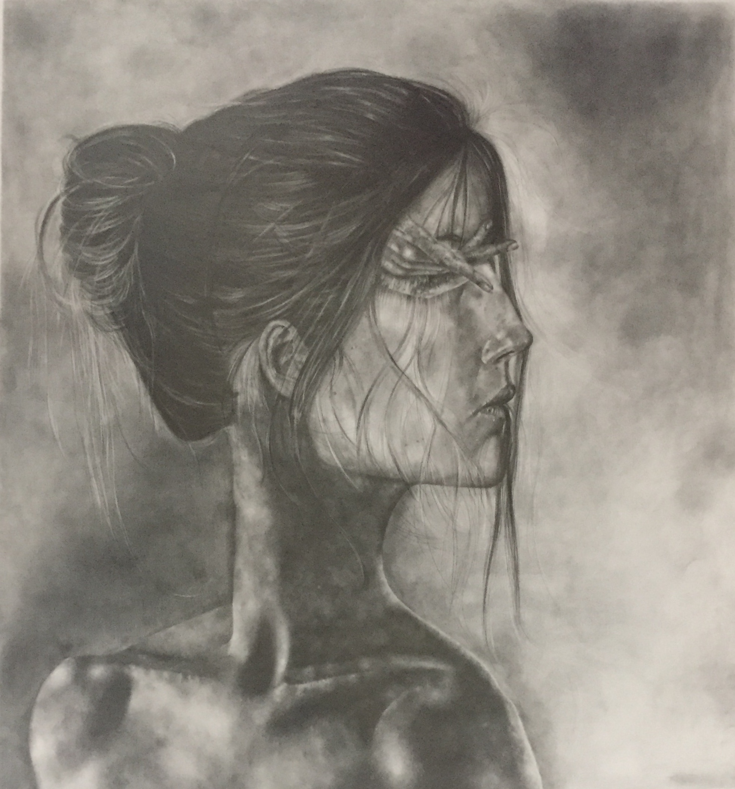
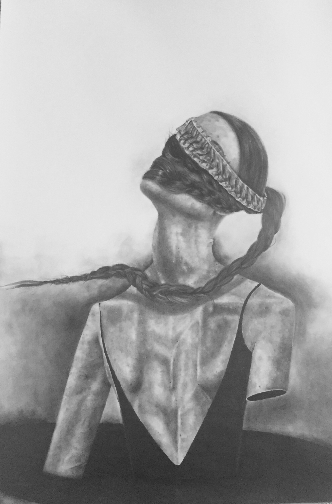
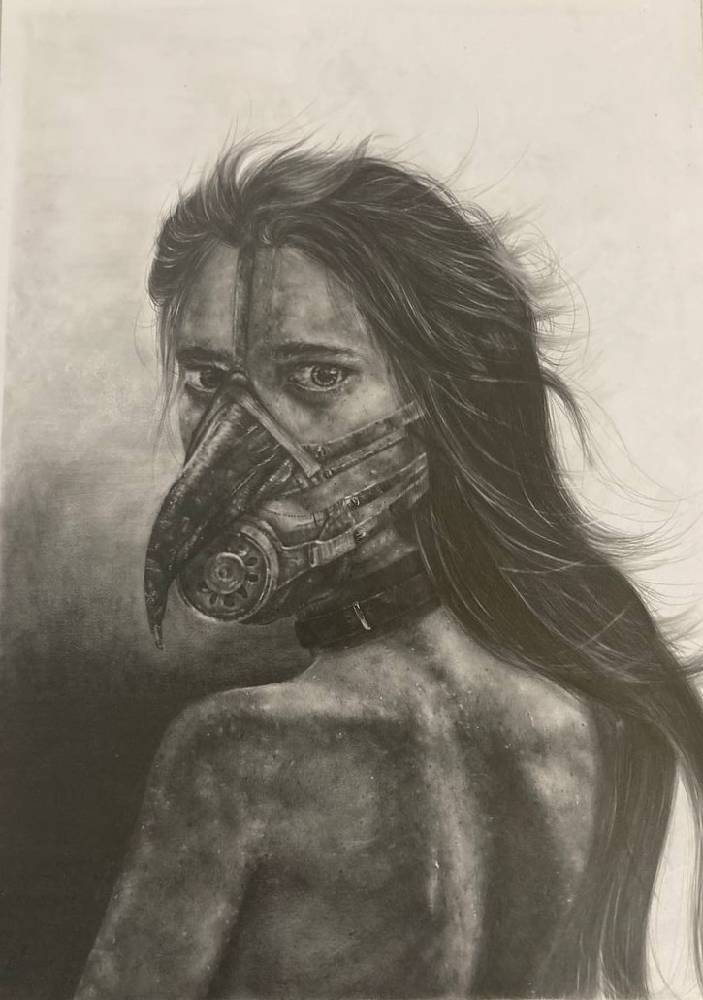
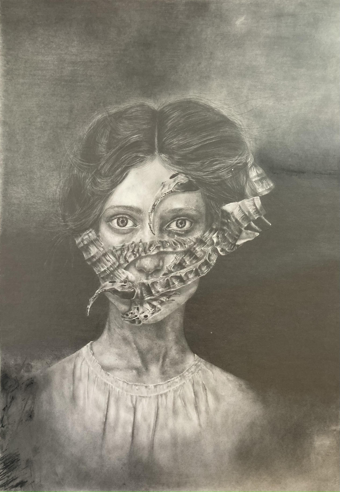
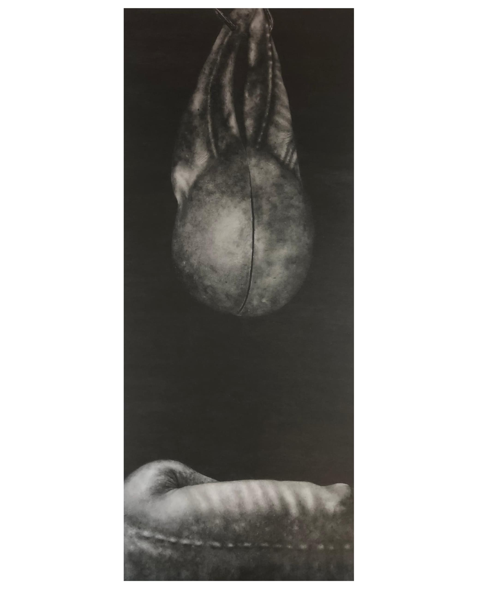

La serie Constelaciones explora el interior del ser humano, exponiendo cuerpos lacerados y
sonrisas cubiertas por máscaras, donde la mirada dice mas que mil palabras. La mente se cuestiona la
existencia misma, transitando los rincones mas oscuros del alma. Es mas simple cubrirnos con una máscara
imperceptible para otros, ocultando nuestra alma degollada, con tantos agujeros en el interior, que con tan
solo un tacto sucumbiríamos a la profundidad del abismo. Constelaciones no solo son dibujos, son hojas de un
desgarrado libro que narra un historia donde se entrelaza la agonía y la esperanza, incidiendo factores
sociales y espirituales.

Revelación.
Grafito sobre cartulina,
50 cm x 50 cm.
2024

Obturado.
Grafito sobre cartulina,
70 cm x 50 cm
2024

El Rapto.
Grafito sobre cartulina,
100cm x 70 cm.
2024

Mutismo.
Grafito sobre cartulina,
54cm x 39 cm.
2024

Celda I.
Grafito sobre cartulina,
70 x 45 cm.
2024

Ofrenda a Marie.
Grafito sobre cartulina,
66 x 46 cm.
2025

Grafito sobre cartulina,
100 x 36 cm.
2025